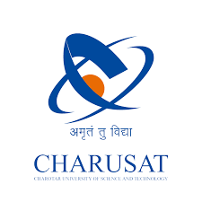

Welcome to the official portal of Charusat, a dynamic platform designed to
bridge the gap between students, faculty, and administration. Established in 2000, our
institution has been a beacon of academic excellence, innovation, and holistic
development.
This portal serves as the digital gateway for all stakeholders—providing seamless access to
academic resources, important announcements, examination details, results, and
administrative services. Whether you're a student tracking your academic journey, a faculty
member managing course content, or an administrator overseeing operations, everything
begins here.
At CHARUSAT, we believe in empowering our community through technology.
Our portal reflects our commitment to transparency, accessibility, and continuous
improvement. It is regularly updated to meet the growing needs of a modern, tech-savvy
academic environment.
Explore. Learn. Grow.
Together, we create the future.
CHARUSAT is a premier university committed to academic excellence, innovation, and
societal development.
Located in Changa, Gujarat, it offers world-class education across engineering,
management, pharmacy, and more.
The campus fosters a student-centric environment with modern infrastructure and
research-driven learning.
With NAAC ‘A+’ accreditation, CHARUSAT emphasizes quality, ethics, and global
standards.
Our mission is to empower students to become responsible professionals and leaders of
tomorrow.